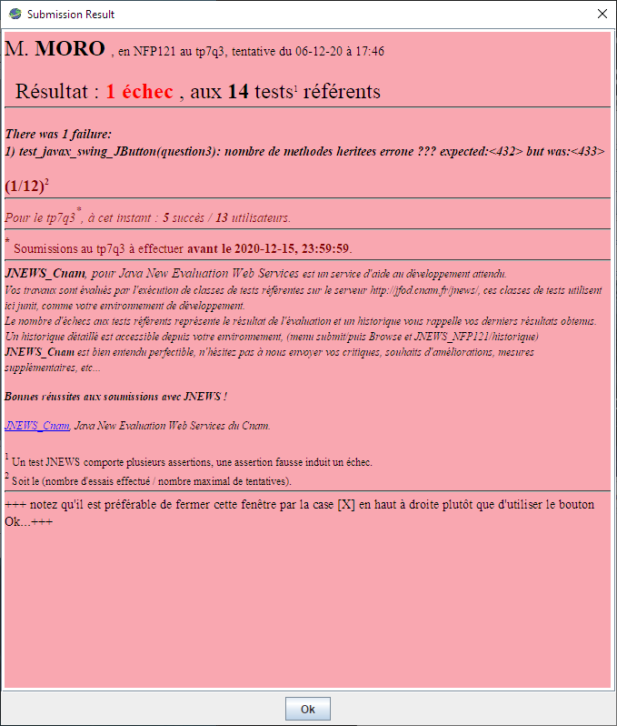

| Nom | MORO |
| Prénom | Alexandre |
| Matricule | 0g5drredxv9 |
cetteMethodeEstPresente, cetteMethodeAttendUnSeulParametre, invoquer et l'initialisation du singleton.Classe TableMethodesJavaLangMath
package question1; import java.lang.reflect.InvocationTargetException; import java.lang.reflect.Method; import java.util.*; /** * Gestion par introspection des méthodes de la classe java.lang.Math,<br> * Seules sont conservées :les méthodes retournant un double et d'arité 1 ou 2<p> * Note : Emploi du Pattern Singleton pour cette table, accessible uniquement en lecture par des accesseurs<p> * La convention de nommage est la suivante : * le "Nom" de la fonction suivi de "(double)" exemple : "sqrt(double)" * ou le "Nom" de la fonction suivi de "(double, double)" exemple : "IEEEremainder(double, double)" */ final public class TableMethodesJavaLangMath { /** * Singleton */ private static TableMethodesJavaLangMath instanceUnique = null; /** * Le dictionnaire contient la liste des méthodes disponibles. * un choix de dictionnaire pourrait être pour la Clé une String soit le Nom de la fonction + "(double)" ou "(double, double)".<br> * et en Valeur = la Method correspondante. * ou tout autre choix */ private static Map<String, Method> tableDesMethodes = null;// à compléter ... /** bloc statique d'intialisation de la table des méthodes */ static { tableDesMethodes = new TreeMap<>(); for (Method m : Math.class.getDeclaredMethods()) { String paramType = Arrays.toString(m.getParameterTypes()); if ((paramType.equals("[double, double]") || paramType.equals("[double]")) && m.getReturnType().toString().equals("double")) { String methodName = m.getName() + "(" + paramType.substring(1, paramType.length() - 1) + ")"; tableDesMethodes.put(methodName, m); } } } // fin du Singleton private TableMethodesJavaLangMath() { } // Créé une instance de la classe si celle-ci n'est pas présente. public static TableMethodesJavaLangMath getInstance() { synchronized (TableMethodesJavaLangMath.class) { if (instanceUnique == null) { instanceUnique = new TableMethodesJavaLangMath(); } return instanceUnique; } } /** * @param nomDeLaMéthode Nom de la fonction + "(double)" ou "(double, double)" * @return true si la fonction est présente */ public boolean cetteMethodeEstPresente(String nomDeLaMéthode) { return tableDesMethodes.containsKey(nomDeLaMéthode); // à compléter } /** * @param nomDeLaMethode Nom de la fonction + "(double)" ou "(double, double)" * @return true si la fonction est binaire, d'arité 2 * @throws NoSuchElementException si la méthode demandée n'existe pas */ public boolean cetteMethodeAttendDeuxParametres(String nomDeLaMethode) { if (!tableDesMethodes.containsKey(nomDeLaMethode)) throw new NoSuchElementException(); return tableDesMethodes.get(nomDeLaMethode).getParameterTypes().length == 2; } /** * @param nomDeLaMethode Nom de la fonction + "(double)" ou "(double, double)" * @return true si la fonction est unaire, d'arité 1 * @throws NoSuchElementException si la méthode demandée n'existe pas */ public boolean cetteMethodeAttendUnSeulParametre(String nomDeLaMethode) { if (!tableDesMethodes.containsKey(nomDeLaMethode)) throw new NoSuchElementException(); return tableDesMethodes.get(nomDeLaMethode).getParameterTypes().length == 1; } /** * Obtention de la liste ordonnée des méthodes * * @return la liste triée des fonctions issues de java.lang.Math */ public String[] listeDesMethodes() { return tableDesMethodes.keySet().toArray(new String[0]); } /** * Invocation d'une méthode de la table * * @param nomDeLaMethode Nom de la fonction + "(double)" * @param arg1 l'opérande * @return un résultat * @throws NoSuchElementException si la méthode demandée n'existe pas ou une exception levée par la fonction appelée */ public double invoquer(String nomDeLaMethode, double arg1) throws Exception { if (!tableDesMethodes.containsKey(nomDeLaMethode)) throw new NoSuchElementException(); return (double) tableDesMethodes.get(nomDeLaMethode).invoke(this, arg1); } /** * Invocation d'une méthode de la table * * @param nomDeLaMethode Nom de la fonction + "(double, double)" * @param arg1 l'opérande * @return un résultat * @throws NoSuchElementException si la méthode demandée n'existe pas ou une exception levée par la fonction appelée */ public double invoquer(String nomDeLaMethode, double arg1, double arg2) throws Exception { if (!tableDesMethodes.containsKey(nomDeLaMethode)) throw new NoSuchElementException(); return (double) tableDesMethodes.get(nomDeLaMethode).invoke(this, arg1, arg2); } }
/** * Cette methode permet de relier par introspection, un observable et un observateur<p> * Appel par introspection de la methode observable.addObserver(observer) * * @param observable une instance de la classe java.util.Observable ou l'une de ses derivees * @param observer une implementation de l'interface java.util.Observer * @throws NoSuchElementException en cas d'erreur */ public static void lierObservableEtObserver(Object observable, Object observer) throws Exception { try { // Par pur plaisir de reprendre la méthodologie vue en UTC503... Arrays.stream( observable.getClass().getMethods()) // On récupère les méthodes .filter(x -> x.getName().contains("addObserver")) // on filtre sur les méthodes contenant "add" .filter(x -> x.getParameterTypes().length == 1) // si la méthode n'accepte qu'un paramètre .filter(x -> x.getParameterTypes()[0].isInstance(observer)) // Si ce paramètre est d'instance égale à celle de Listener .collect(Collectors.toList()) // on repasse en liste .get(0) // on récupère le seul choix possible (normalement .... ) .invoke(observable, observer); // on invoque la méthode } catch (Exception e) { throw new NoSuchElementException(); } } /** * Cette methode permet de delier par introspection, un observable et un observateur<p> * Appel par introspection de la methode observable.deleteObserver(observer) * * @param observable une instance de la classe java.util.Observable ou l'une de ses derivees * @param observer une implementation de l'interface java.util.Observer * @throws NoSuchElementException en cas d'erreur */ public static void delierObservableEtObserver(Object observable, Object observer) throws Exception { try { Arrays.stream( observable.getClass().getMethods()) .filter(x -> x.getName().contains("deleteObserver")) .filter(x -> x.getParameterTypes().length == 1) .filter(x -> x.getParameterTypes()[0].isInstance(observer)) .collect(Collectors.toList()) .get(0) .invoke(observable, observer); } catch (Exception e) { throw new NoSuchElementException(); } }
Ce bloc de code est utilisable sans grande modification pour les 3 autres méthodes.Il aurait été tout a fait possible de factoriser l'ensemble.
(Ce fut tenté mais j'ai fini par facher Jnews).
/** * Cette methode permet de relier par introspection, une source et un "listener"<p> * Appel par introspection de la methode source.addXXXXListener(listener) * * @param source est une instance * @param listener une implementation d'une interface XXXXListener * @throws NoSuchElementException en cas d'erreur */ public static void lierSourceEtListener(Object source, Object listener) throws Exception { try { Arrays.stream( source.getClass().getMethods()) .filter(x -> x.getName().contains("add") && x.getName().contains("Listener")) .filter(x -> x.getParameterTypes().length == 1) .filter(x -> x.getParameterTypes()[0].isInstance(listener)) .collect(Collectors.toList()) .get(0) .invoke(source, listener); } catch (Exception e) { throw new NoSuchElementException(); } } /** * Cette methode permet de delier par introspection, une source et un "listener"<p> * Appel par introspection de la methode source.removeXXXXListener(listener) * * @param source est une instance * @param listener une implementation d'une interface XXXXListener * @throws NoSuchElementException en cas d'erreur */ public static void delierSourceEtListener(Object source, Object listener) throws Exception { try { Arrays.stream( source.getClass().getMethods()) .filter(x -> x.getName().contains("remove") && x.getName().contains("Listener")) .filter(x -> x.getParameterTypes().length == 1) .filter(x -> x.getParameterTypes()[0].isInstance(listener)) .collect(Collectors.toList()) .get(0) .invoke(source, listener); } catch (Exception e) { throw new NoSuchElementException(); } }
Principe quasi identique à la question 2.1 mais avec un filtrage plus fin sur le nom de méthode.
Soit à développer un petit outil ( de génie) logiciel qui, pour une classe donnée, retourne la liste des méthodes héritées non redéfinies localement.
package question3; import java.lang.reflect.Method; import java.lang.reflect.Modifier; import java.util.*; public class Introspection { public static Set<Method> getHeritees(String nomDeLaClasse) throws ClassNotFoundException { Class<?> classe = Class.forName(nomDeLaClasse); List<List<Method>> tree = new ArrayList<>(); Class<?> tempClasse = classe; while (tempClasse != null) { tree.add(localMethodsMap(tempClasse)); tempClasse = tempClasse.getSuperclass(); } Set<Method> result = new HashSet<>(); for (Method m : checkInherent(tree)) result.add(m); return result; } public static void main(String[] args) throws ClassNotFoundException { for (Method m : Introspection.getHeritees("java.util.AbstractCollection")) { System.out.println(m); } } private static List<Method> localMethodsMap(Class c) { if (c == null) throw new NoSuchElementException(); List<Method> localMethods = new ArrayList<>(); for (Method m : c.getDeclaredMethods()) if (IsPublicOrProtected(m)) localMethods.add(m); return localMethods; } private static boolean IsPublicOrProtected(Method m) { return (Modifier.isPublic(m.getModifiers()) || Modifier.isProtected(m.getModifiers())) && !(Modifier.isAbstract(m.getModifiers())); } private static boolean isEqual(Method a, Method b) { return a.getName().equals(b.getName()) && (Arrays.equals(a.getParameterTypes(), b.getParameterTypes())) && a.getReturnType().equals(b.getReturnType()); } /** * * @param list * @return */ private static List<Method> checkInherent(List<List<Method>> list) { List<Method> result = new ArrayList<>(); if (list.size() > 1) { List<Method> allMethods = new ArrayList<>(); Method current; Method compare; List<Method> foundIn = new ArrayList<>(); for (int i = 0; i < list.size(); i++) allMethods.addAll(list.get(i)); // Traitement des méthodes locales for (int i = 0; i < list.get(0).size(); i++) { current = allMethods.get(i); for (int j = i + 1; j < allMethods.size(); j++) { compare = allMethods.get(j); if (isEqual(current, compare)) { foundIn.add(compare); } foundIn.add(current); } } // Suppression dans la liste contenant toutes les méthodes for (Method m : foundIn) allMethods.remove(m); foundIn.clear(); //traitement des héritages for (int i = 0; i < allMethods.size(); i++) { current = allMethods.get(i); for (int j = i + 1; j < allMethods.size(); j++) { compare = allMethods.get(j); if (isEqual(current, compare)) { foundIn.add(compare); } } } for (Method m : foundIn) allMethods.remove(m); result.addAll(allMethods); } return result; } }
Un erreur Jnews sur cette méthode :
Bibliographie : La javadoc un peu, la javadoc beaucoup ...
Question 1 et 2 sympathique et abordable, je me suis permis un peu de fanstaisie pour la seconde.
La question3 était elle difficile ? En fait non, elle aura eu le mérite de remettre un peu de révison dans le type de classe redéfinissable et ... dans la hiérarchie de certaines bibliothèques.
Je ne vais pas dire que ça aura été une promenade de santée ...bien au contraire, mais la dificultée venait plus d'une bonne compréhension de l'énoncé que de l'application de l'exercice lui même.(même si j'ai du mettre de cîoté une partie de ma fierté ...)
Cette dernière donne une seule erreur Jnews, mais comme vu sur le forum pour d'autres auditeurs, cela semble correct.
Un peu comme essayer une 500CR parce que bon "la motocross on a lhabitude ...", parfois il faut savoir être humble pour éviter de se casser les bras... et y revenir avec un peu plus d'expérience.
(je n'ai jamais voulu rententer ...)